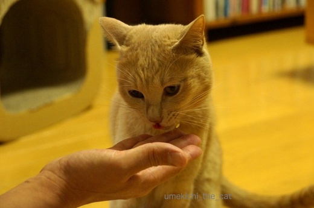
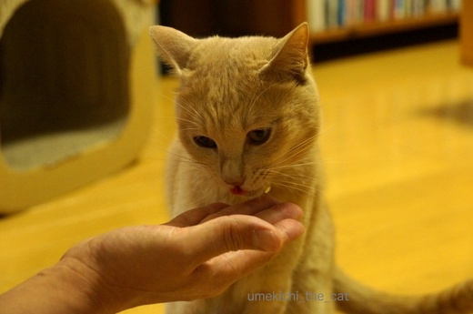

おやつがあれば大丈夫 [梅吉]
夕食時、ついつい我を忘れて食卓テーブルに飛び乗った梅吉さん。
怒られて拗ねて寝ちゃった？
でも耳の角度がね、寝ている耳じゃないですよね〜。

近づいてみると

目、開いてるし！

全然寝てません。耳はおとーさんとおかーさんの行動をチェックしている様子。

食事が終わってテーブルの上を片付け始めると・・・
ん？何かの気配を察した？
梅吉用に取っておいた小さなお皿が冷蔵庫から出て来る気配を感じると

シャキーン！！
![[猫]](https://blog.ss-blog.jp/_images_e/101.gif) わしのでばんやなっ！！！
わしのでばんやなっ！！！
さっきまで拗ねていたのが嘘のような変わり身です(^▽^;)
食べ物で機嫌がなおる子ww

おいちいお肉当たりました。
どんなにこっそり行動しても何かもらえる気配はものすごく敏感に察知します。
動物的勘？それとも人間の話している言葉わかっている？？
 ↑ガブッと一押し↑
↑ガブッと一押し↑
廊下で光を受けて金色に輝く梅吉さん。
決まってますよ〜。
でもね、そこはとっても邪魔なんです・・・
あかん、とおさへん。10かりかりでどや？
時々できる猫関所。猫のお役人様は理不尽です。
･゜ﾟ･*:.｡..｡.:*･゜ﾟ･*:.｡. .｡.:*･゜ﾟ･*･゜ﾟ･*:.｡..｡.:*･゜ﾟ･*:.｡..｡.:*･゜ﾟ･* ･゜ﾟ･*:.｡..｡.:*･゜ﾟ･*:.｡. .｡.:*･゜ﾟ･*･゜ﾟ･
猫飼いブロガーさんが多数応募されている極楽ねこカレンダーフォトコンテスト
遅ればせながら応募しました＾＾
システムがよく分からないのですがコンテストの投票は１IPアドレス一票なのかな？
一度投票された方が他のにゃんこに投票しようとすると反映されなかったりしているようですし。
フォトコンテストの結果とカレンダーに採用されるかは別物、とのことなので
得票はもう諦めました〜。
めでたくカレンダーに採用されたときは大々的におしらせしますね。
こちらから応募写真にアクセスできます。
梅吉の顔だけでも見てやってくださいませ。
怒られて拗ねて寝ちゃった？
でも耳の角度がね、寝ている耳じゃないですよね〜。

近づいてみると

目、開いてるし！

全然寝てません。耳はおとーさんとおかーさんの行動をチェックしている様子。

食事が終わってテーブルの上を片付け始めると・・・
ん？何かの気配を察した？
梅吉用に取っておいた小さなお皿が冷蔵庫から出て来る気配を感じると

シャキーン！！
さっきまで拗ねていたのが嘘のような変わり身です(^▽^;)
食べ物で機嫌がなおる子ww

おいちいお肉当たりました。
どんなにこっそり行動しても何かもらえる気配はものすごく敏感に察知します。
動物的勘？それとも人間の話している言葉わかっている？？
廊下で光を受けて金色に輝く梅吉さん。
決まってますよ〜。
でもね、そこはとっても邪魔なんです・・・
時々できる猫関所。猫のお役人様は理不尽です。
･゜ﾟ･*:.｡..｡.:*･゜ﾟ･*:.｡. .｡.:*･゜ﾟ･*･゜ﾟ･*:.｡..｡.:*･゜ﾟ･*:.｡..｡.:*･゜ﾟ･* ･゜ﾟ･*:.｡..｡.:*･゜ﾟ･*:.｡. .｡.:*･゜ﾟ･*･゜ﾟ･
猫飼いブロガーさんが多数応募されている極楽ねこカレンダーフォトコンテスト
遅ればせながら応募しました＾＾
システムがよく分からないのですがコンテストの投票は１IPアドレス一票なのかな？
一度投票された方が他のにゃんこに投票しようとすると反映されなかったりしているようですし。
フォトコンテストの結果とカレンダーに採用されるかは別物、とのことなので
得票はもう諦めました〜。
めでたくカレンダーに採用されたときは大々的におしらせしますね。
こちらから応募写真にアクセスできます。
梅吉の顔だけでも見てやってくださいませ。

カフェオレ色の梅吉

梅吉 2023年8月10日 永眠


梅吉と出会った譲渡会

犬猫の理由なき殺処分ゼロ
妄想広告
UMEKICHI 光

爆発的に早い！
時々攻撃的！
Thanks to Mr.Boss365
爆発的に早い！
時々攻撃的！
Thanks to Mr.Boss365

目がシャキーンとしましたね。オヤツにまさるものはないですね。
by みぃにゃん (2017-06-14 15:07)
ミミが聞いてますね。
梅吉さんがいると気が抜けませんね(^_^;)
投票完了です(^^♪
by muku (2017-06-14 15:29)
熟睡してても音を聞いたら「シャキーン」ってなりますよね(笑)目をあいてるならなおさらです！たぶんね猫は人間の会話も行動もぜ～～んぶ知ってるんですよ。(ΦωΦ)ﾌﾌﾌ…
by palpal (2017-06-14 16:53)
わーーっ! どうしてみんな同じのに応募するの?? 可愛いのに押せなくてゴメンなさい。
でもきっと来年はみんなが載ってるカレンダーが手に入るんだ! わーい!!
(人気で売り切れ続出してた家にゃんも先週ちゃんと手に入れましたよ)
by zombiekong (2017-06-14 17:21)
あはは！
我が家にも「反省ざぶとん」があって、子猫のころから怒られるとその座布団でふて寝するのですが、その様子と今日の梅吉さんそっくりです(^▽^;)
極楽猫カレンダーコンテスト、梅吉さんにポチ！完了です♪
よくわからないのですが、同じ写真は「投票済みです」と表示されて2回目投票はできませんが、違う写真は大丈夫みたいです。リュカさんにもぽちの輔さんにもポチ！出来ましたから^^;
間違ってたらごめんなさい<(_ _)>
by ゆきち (2017-06-14 17:27)
全身で気配や動きを察知しているのですね♪
ちょいと拗ねている梅吉さんも可愛いです(#^.^#)
by きぃ (2017-06-14 19:31)
梅吉さん、耳はしっかりチェックしてますねぇ(⌒-⌒; )
先代猫はゴッドマザーに怒られると部屋の隅で肩を落として反省してましたが、
耳だけはちゃんとこっち向いてて、かみさんが「もう、良いよ。おいで」
って言うとすっ飛んできてましたw
おやつよりもかみさんLOVEな超マザコン猫でしたw
by ニッキー (2017-06-14 19:43)
採用を願って、ガブッと！＾＾
by KENT0mg (2017-06-14 20:06)
梅吉さん、おやつ音や空気の流れにt集中しているのかな。^^;
うう。他の方に投票したので投票できませんでした。。。(T_T)
by yes_hama (2017-06-14 21:52)
すね方が可愛いですね。
極楽ねこカレンダーフォトコンテスト、梅吉さんにも1票をと思いました。
が『すでに投票済み』ですと〜ぉ。
by kiki (2017-06-14 22:27)
ありますあります。
耳がこっち向いているので、あ、起きてる、って思うこと。
全然関係ないことでも｢○○しよっかなー？｣と言うと
起きたり…ね(^^;
既に投票済みです、って出ちゃいました。なんでだ？？
こてつクンに投票したからかな？
IPアドレスが同じだ、って分かるのかも…。
by も〜 (2017-06-15 00:30)
犬も猫も人間の話してること、部分的に理解してますよね。特に食べ物とかオヤツとか散歩とか（笑）
梅吉さん、表情豊かで見ていて楽しいね！
投票してきましたよ～(≧∇≦)
by ミミハナ (2017-06-15 09:31)
叱られて拗ねてたって。聞き耳はたてるさ！
いざというときにはすぐに駆けつけるよ！
いざという時・・・対外おやつがらみだけど～
缶詰を開けたときも良い反応しますｗ
梅吉くんに1票してきたよ～♪とっても爽やかな1枚だね。
家のひなちゃんとは大違いです・・・(^^;
by emi (2017-06-15 14:16)
おやつやゴハンの気配は
ものすごい勢いで察しますよね！(笑)
梅吉君、機嫌も直ってよかったねー^^
極楽ねこ投票してきたよー！
まんまるお目々のすごく良い表情^^
みんな採用されると嬉しいよねーーー
by リュカ (2017-06-15 20:42)
可愛いなあ＾＾
猫はちゃんと人のこと見てるんですよねー
「やべー、怒られた！」って思ったんだね。（梅吉さんは関西弁やね）
by じゅらまろ (2017-06-16 12:42)
みぃにゃんさん＞シャキーンと目つきが変わるほどの物があって良かった・・・
と思うことにしています^^;
元気のバロメーターにもなるしねww
mukuさん＞どんなにそぉっと冷蔵庫を開けても気づいたら後ろにいる・・・
って良くあります^^;
よく寝ているなぁ・・・と調理の途中でキッチンから離れて
トイレに行くのも禁物！
戻ってきたら絶対キッチンにいて何かなめている・・・・=͟͟͞͞ ( ꒪౪꒪)
全くもって油断なりませんww
愛のこもった一票ありがとうございましたm(_ _)m
palpalさん＞絶対人間の話している内容理解しているよね！
何々しちゃだめ〜っていうのも！！
わかっているけど従わないところが猫様なんだな・・・・(ΦωΦ)
zombiekongさん＞押そうとしていただいたお気持ちだけで嬉しゅうございます＾＾
カレンダー採用ドキドキで〜す。
みんなで採用されるとうれしいなぁ・・・・
ゆきちさん＞「反省ざぶとん」(*>艸<) ！！
やっぱり人間に背中を向けて壁を見つめるのでしょうかww
拗ねる・・・という感情がまた可愛くて愛おしいですよね。
おお！ゆきちさんの一票が！！
愛のこもった一票ありがとうございましたm(_ _)m
わたしもこてつくんに再トライ。わー！押せたー！！
きぃさん＞もう耳が裏返っちゃうんじゃないかと思うくらい
ニンゲンの方を向いてました＾＾
おそらく梅吉が拗ねていたのは5秒くらいかと・・・・
そのあとは「わしなんでかべのほうむいてるんやろ・・」って
思いながら寝ていたと思います。
すぐ忘れちゃうから〜(≧艸≦)
ニッキーさん＞おやつに勝るゴッドマザー様！流石です！！
梅吉はおやつLOVE！！
おやつで釣ったら誰にでもついて行くと思います(^▽^;)
KENT0mgさん＞ガブッ！ありがとうございます(^o^)
決戦の10日間、土日は戦士の休息でしょうか。
ごゆるりと〜。
yes_hamaさん＞空気は全く読まないくせに、空気の流れには敏感ですね・・・^^;
「食べる〜〜？」って声をかけたらどこにいても走ってくるし
ニンゲンの言葉も理解していると確信しています！
投票のお気遣いありがとうございました＾＾
kikiさん＞おそらく拗ねた時間は5秒くらい・・・
そのあとは「いつわしのおやつがでるんやろ！」
と必死で聞き耳を立てていたと思われます^^;
投票のお気遣いありがとうございました＾＾
も〜さん＞寝たふり、上手いですよね〜。
熟睡しているなと思って冷蔵庫を開けたら瞬間移動で後ろにいたり・・
なんだ、起きてたんじゃない・・って(⌒_⌒;
カレンダー採用には関係ありません・・・とのことなので
固いこと言わないでさぁ〜って感じですよねww
投票のお気遣いありがとうございました＾＾
by ちぃ (2017-06-16 16:38)
ミミハナさん＞食べ物、オヤツ、散歩！
自分たちが好きなものばっかりって所が凄いですよね〜。
都合の悪いことは知らんぷり〜(⌒_⌒;
梅吉はベランダに出るのが大好きなのでベランダに出る気配を察すると
すごい勢いで走ってきます＾＾
散歩みたいなものなんでしょうね。
おお！愛のこもった一票ありがとうございましたm(_ _)m
食パン買ったの〜！！
私はクロワッサンにしようかな・・・と思っている、ふふ＾＾
emiさん＞そうそう！ぜんぜん「いざ」じゃないのに駆けつけます(^▽^;)
ベランダにしつこく来る鳩を追っ払って欲しいのに見てるだけだしww
うちは缶詰じゃなくてパウチに反応しますよ〜。
容器の形状を覚えているのかレトルトのカレーを開けようとすると
反応してきて困ります。
おお！投票いただけたのですね！！
愛のこもった一票ありがとうございましたm(_ _)m
リュカさん＞食べ物の気配＆ベランダに出る気配も察知します！
お洗濯物干し＆取り込み時に困るんだ〜。
別室に隔離してベランダに出るんだけど「虐待！？」
ってくらい大声で鳴くから各家窓を開けている今の季節
ちょっと恥ずかしい・・・(〃ω〃)
カレンダー、みんな一緒に掲載されたいね！
by ちぃ (2017-06-16 17:43)
じゅらまろさん＞ニンゲン観察されている！？って思う時がありますよ〜。
梅吉はプッシュ式のゴミ箱を開けるんだけど
絶対ニンゲンの使い方を見て覚えたんだと思う！
実は知能レベルなんてワンコより高いんだけど
「かしこいわかったらいろいろいわれてかなわんわ〜」と
ちょっとおバカなふりしているような気がしてなりません(･◇･)
by ちぃ (2017-06-16 19:40)